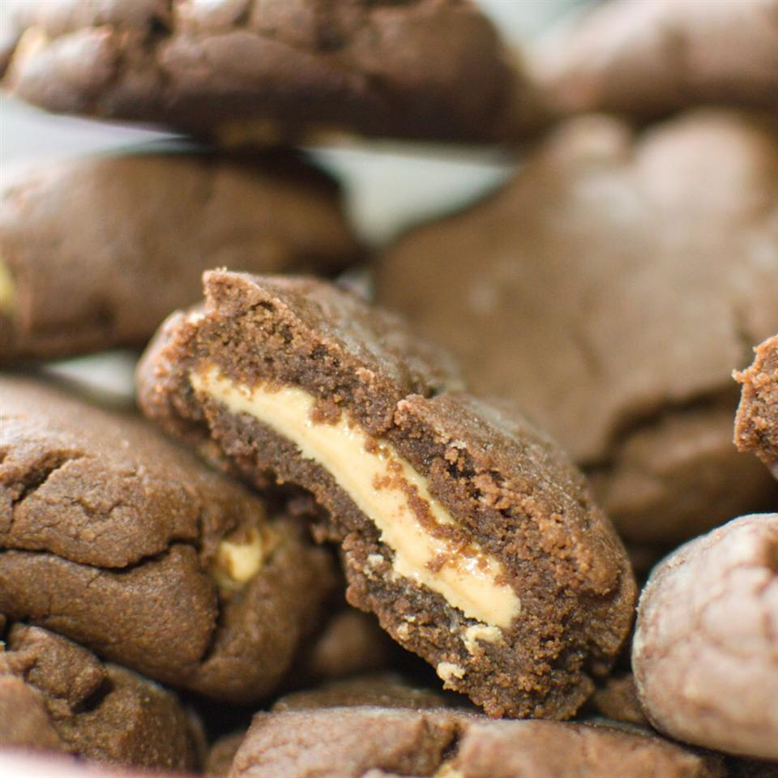

Magic Peanut Butter Cookies

Description
Delicious chocolate cookie with a surprise peanut butter center
Ingredients
- ½ cups all-purpose flour
- ½ cup unsweetened cocoa powder
- ½ teaspoon baking soda
- ½ cup white sugar
- ½ cup packed brown sugar
- ½ cup soft margarine
- ¼ cup peanut butter
- 1 teaspoon vanilla extract
- 1 egg
- ¾ cup confectioners' sugar
- ¾ cup peanut butter
Steps
- In small bowl blend flour, cocoa and baking soda. Mix until well blended.
- In large bowl beat white and brown sugars, butter or margarine and 1/4 cup peanut butter, until light and fluffy. Add vanilla and egg, beat. Stir in flour mixture until blended. Set aside.
- To make Filling: Combine confectioner's sugar and 3/4 cup peanut butter. Blend well.
- Roll filling into 30 1-inch balls. For each cookie, with floured hands, shape about 1 tablespoon of dough around 1 peanut butter ball, covering completely. Place 2 inches apart on an ungreased cookie sheet. Flatten with glass dipped in white sugar.
- Bake at 375 degrees F (190 degrees C) for 7-9 minutes. When cookies are done, they should be set and slightly cracked.